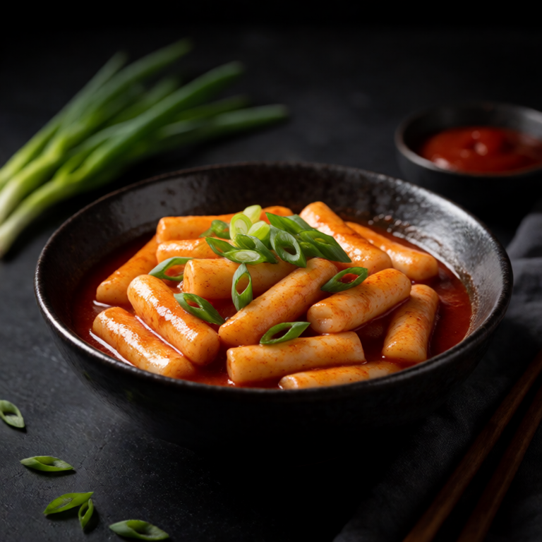

Butter beans simmered in garlic, tomatoes, and spinach. Italian pantry perfection.
This is straightforward food with a few details doing the heavy lifting. Season in stages, look for the doneness cue, and add the fresh finish at the end.
At a Glance
Prep
3m
Cook
15m
Serves
1
Difficulty
Easy
Ingredients
Method
- 01
Build
Saute 3 cloves of sliced garlic in 2 tablespoons of oil, add a handful of tomatoes until they burst. Add 1 can of beans and a splash of wine, simmering and mashing some beans to thicken.
- 02
Add beans
Stir in a handful of spinach until wilted. Season. Drizzle with more oil. Serve with bread and parmesan.
Slop Notes
Lightly mashing some of the beans is what makes the sauce creamy without adding any cream.
Recipe by foidslop · How we create our recipes
Keep eating
Related recipes


